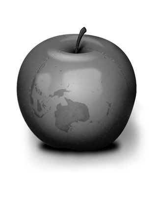

About Smidge
Black + White Photography is a passion of Photo Artist Smidge.
Photo Art
Smidge found he had to photograph almost everything he saw. And so he developed his passion for Photo Art and of telling the story of everyday sights in black and white digital images.
Even the most mundane piece of fruit, a map, grafitti, or street furniture can be combined to tell a special story under Smidge's expert photography.
Background
Smidge spends most of his year travelling around Australia in search of subjects for his portfolio.
He has travelled to over 20 countries as a Photo Journalist for the ABC.
Smidge was a finalist in the 2008 and 2011 Walkley Awards